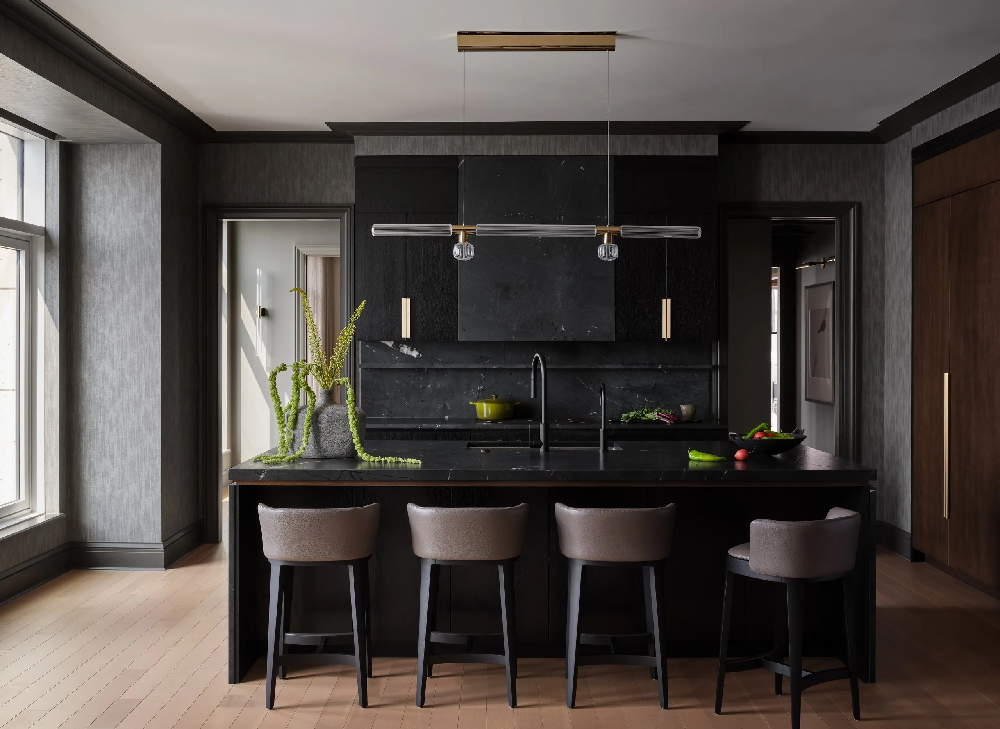
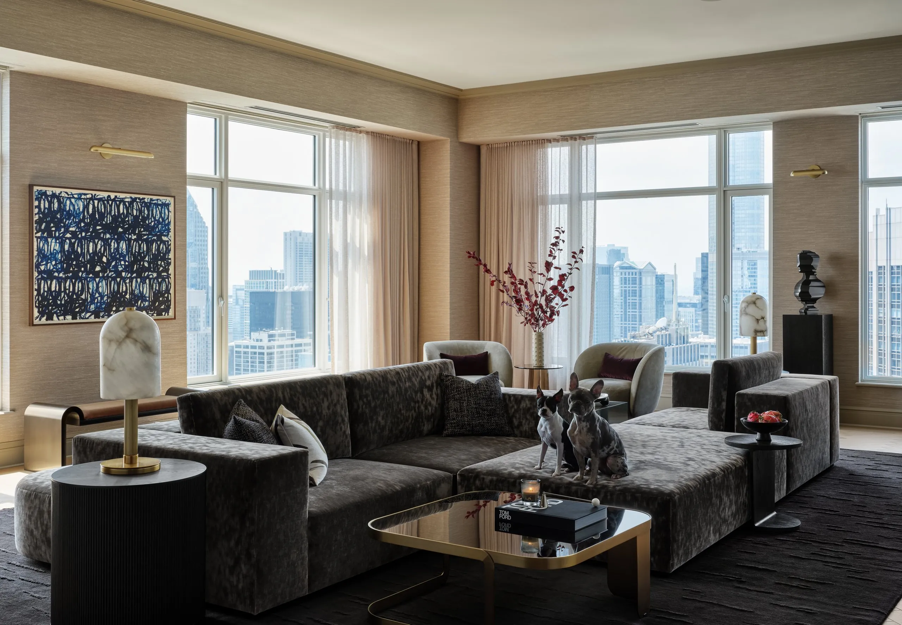
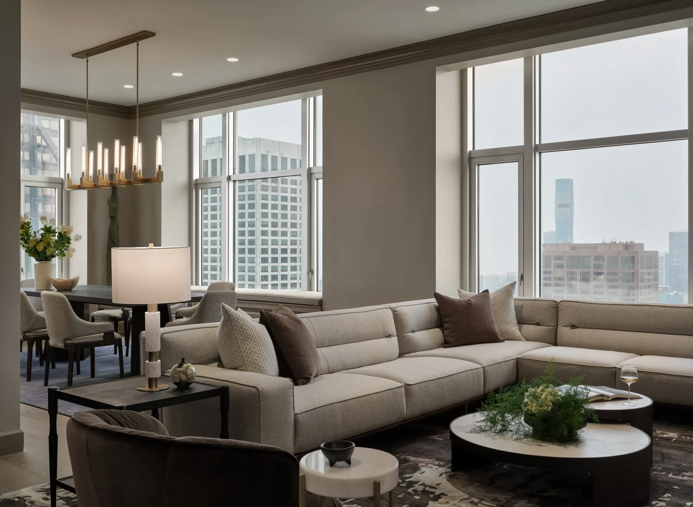
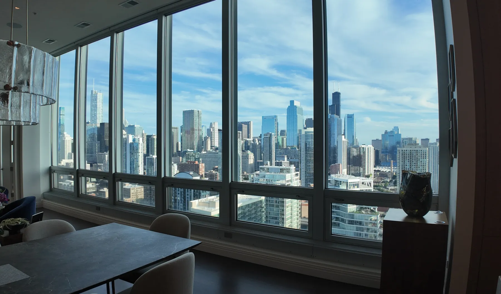
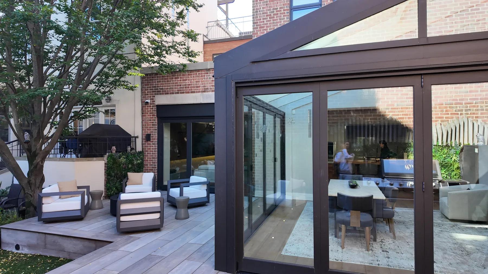
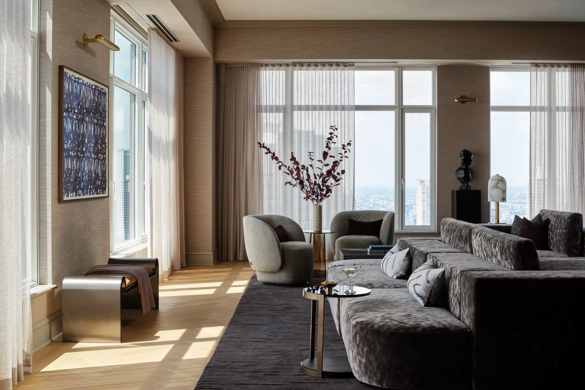

It should reflect how you want to live
Support how you feel
Perform as beautifully as it appears
This is
turn key
CI Design + Build brings architecture, interior design, construction, furnishings, art, wellness, and project management together under one roof
One integrated team handling every step
One seamless process, from concept through the night our team onboards + moves you in
The average person spends 75% of their day at home. The quality of that environment shapes everything — your lifestyle, your health, your longevity goals
How you want to
wake upentertainrechargerecovercollectgather
how you want light to move through your morning. What you want your life to feel like and be in five, ten, or twenty years from now
This is part of the
CI concierge level service
Rather than designing around a predetermined aesthetic, we design around your lifestyle. Architecture, materials, lighting, furnishings, technology, art, and wellness become part of one considered environment
Because
It should change the experience
of living in it
The traditional
Renovation model fragments responsibility across architects, designers, contractors, vendors, and installers — each accountable for only one piece of the outcome
We bring the disciplines together from the beginning
Every factor/step — architecture, interior design, construction, furnishings, art, wellness, procurement, installation, and project management — under one roof, one team, one curated by the CI process from day one
Our curated CI process is built to protect it
We save our clients an average of 20% of their project time. Time you don't get back — unless you have the right team from the beginning
The result is what concierge-level service
actually looks like — you remain involved
where your perspective matters most, while
CI handles everything else
The seamless CI process, clear
communication, and a home where
every detail was considered
before you ever had to ask
TURNKEY IS NOT
A SERVICE LIST.
IT IS A DIFFERENT WAY
OF MANAGING THE ENTIRE
PROJECT
At CI, the people designing your residence
work directly with the people building it.
Budgets, materials, engineering,
procurement, and field conditions
are considered together — never handed
off between separate firms
That connection creates clarity.
Fewer gaps. Better decisions.
A home that performs as well as it looks
The complete CI experience. Architecture, interior design, construction, furnishings, art, wellness, installation, and move-in managed by one team, under one roof
ExploreIntegrated architecture, interior design, and construction for clients who want the built environment expertly coordinated while retaining independence beyond it
ExploreDesign-build extended through furnishings, art, and styling — for a residence that feels considered in every layer, not just every room
ExploreBetter living, designed in. Light, air, water, sleep, recovery, and technology integrated from the ground up — not bolted on at the end
Explore CI WellnessThe answers
become the
foundation
From architecture and circulation to lighting, materials, wellness systems, and art — every decision earns its place

We begin with questions
not about
style,
but about life
The CI process simplifies a complex renovation. We make something complex simple for you as the owner
Your residence, priorities, lifestyle, and vision
Scope, strategy, design direction, and the right CI service level
Architecture and interiors developed together, informed by construction realities from the start
Our field team executes with the design intent already understood
Furnishings, art, technology, and finishing layers complete the residence
Installation, final detailing, and move-in readiness. A home ready to be lived in




Our clients are accomplished people with demanding lives. They appreciate exceptional design — and they expect communication, transparency, and the confidence that comes from knowing the right team is managing the details
CI is built for clients who trust expertise, value collaboration, and want one accountable team responsible for the whole

[Approved client testimonial.]
[Approved client testimonial.]
Every aspect of your project — design, construction, furnishings, and final installation — is managed by one integrated team. One experience. One accountable firm
At CI, turnkey means exactly that — we handle everything. Design, construction, furnishings, art, installation, and move-in, all managed by one integrated team under one roof. You walk into a finished home, not a finished renovation. From the first conversation to the night you move in, every detail is coordinated, every decision is managed, and every layer of the experience is delivered at a concierge level. One team. One standard. Complete responsibility
Projects follow two phases: Design & Planning, then Construction. A detailed schedule is developed early and refined as decisions are finalized — realistic timelines, clear milestones
Transparently. Three components: pass-through costs at CI preferred pricing, a management fee based on project complexity and duration, and a clearly defined overhead and profit structure
Yes — however, items not procured through CI fall outside our coordination. That includes tracking, receiving, inspection, storage, delivery, installation, and any warranty or damage claims
As involved as you want to be. We bring decisions to you at the right moment. The details in between are our responsibility
It depends on scope. We'll advise clearly during the discovery phase
Yes
Significant residential renovations and new builds in Chicago and South Florida

A better home begins with understanding the life you want to build inside it
Tell us what you're considering. We'll define what comes next
Begin Your Better Life